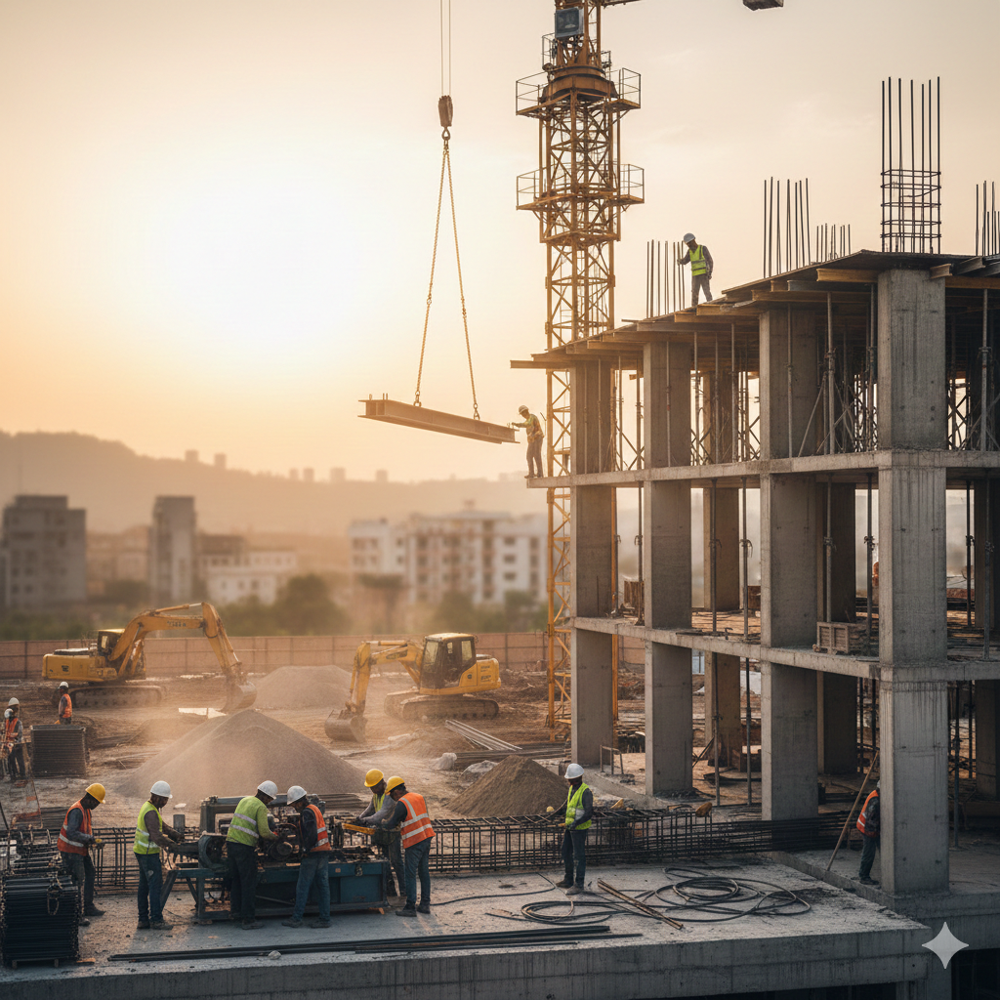
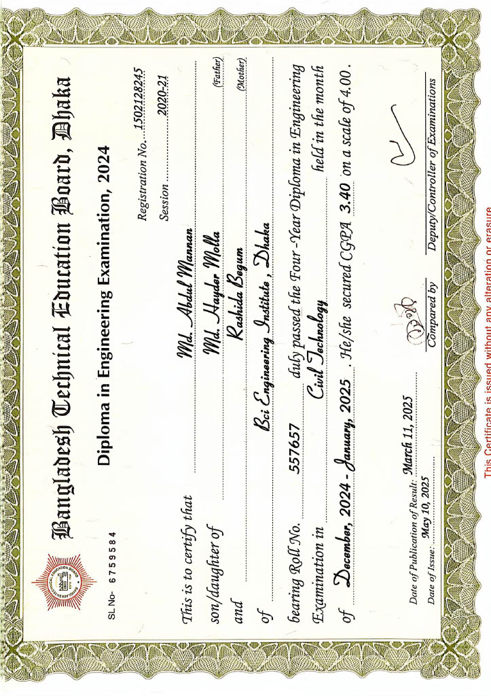
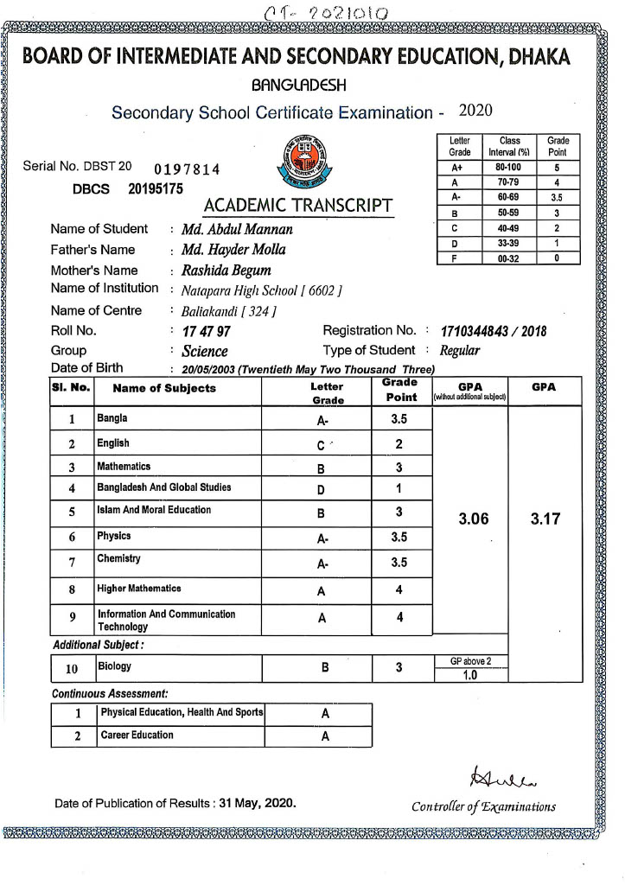
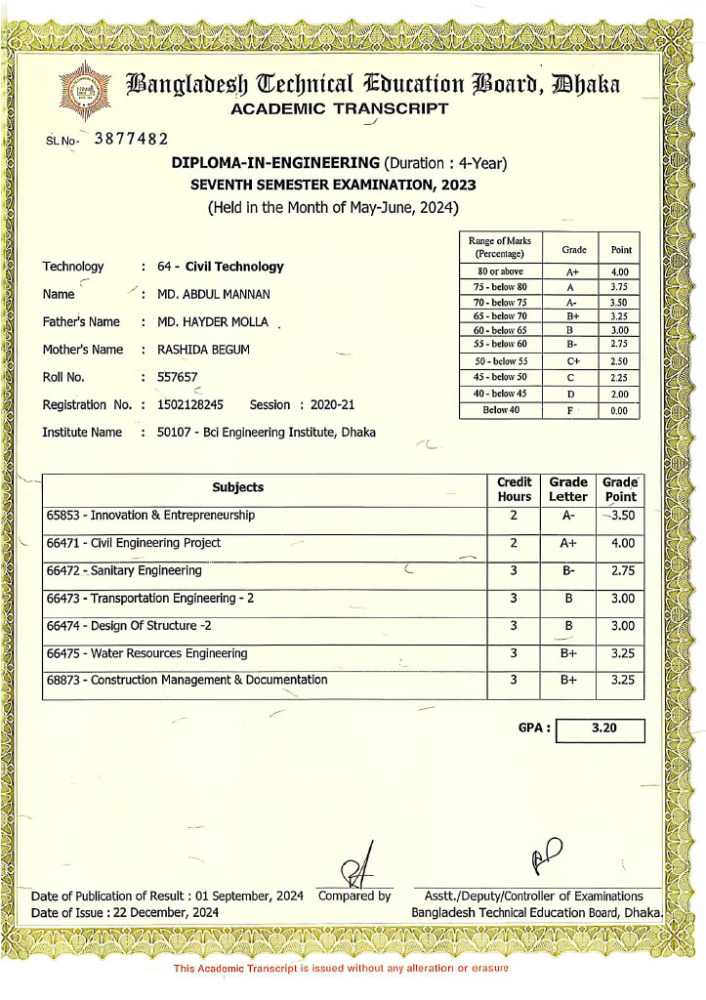
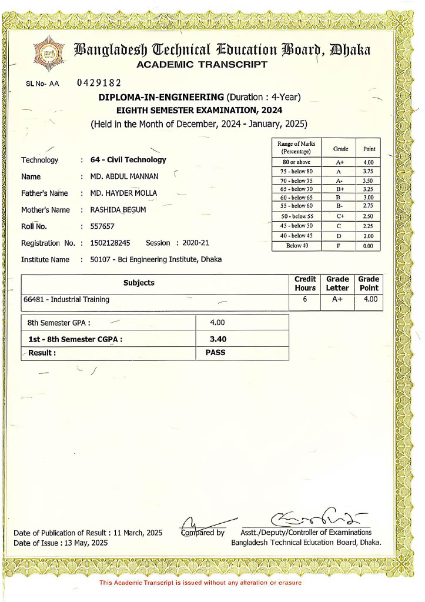
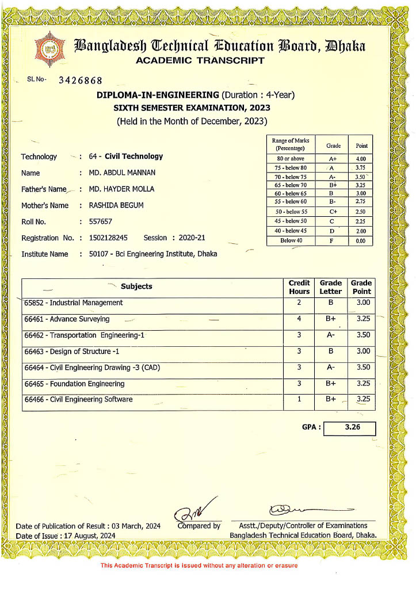
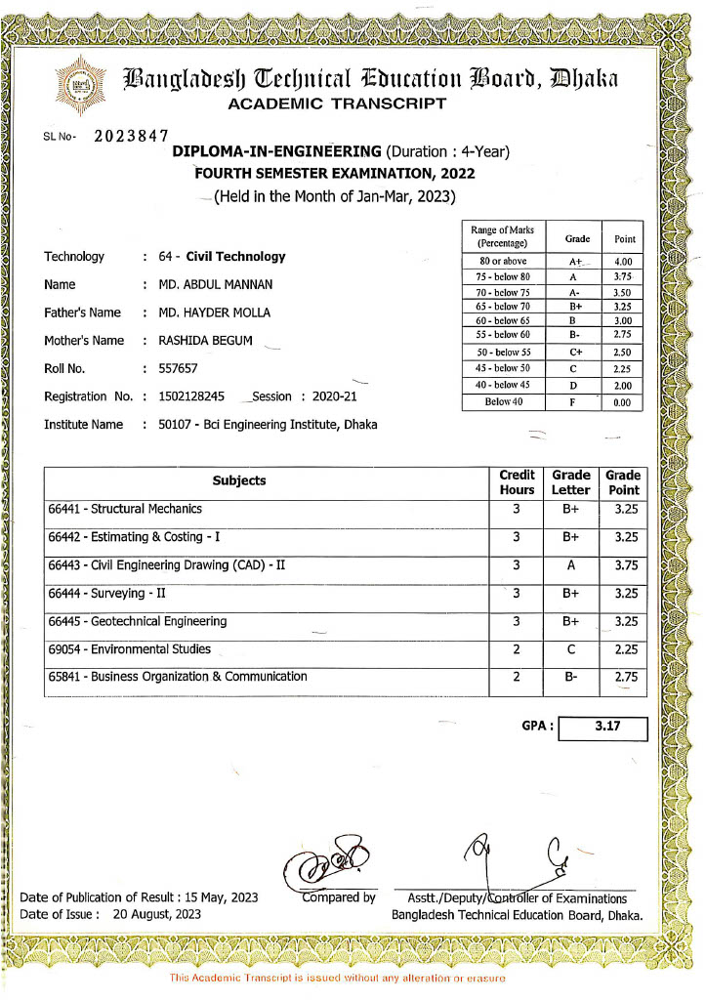

Project Photos



I come from a simple rural background, but I carry big dreams. Despite limited resources, I never gave up. Every failure made me stronger, and every challenge taught me something new.
Md. Abdul Mannan is a Diploma Civil Engineer with hands-on experience in building construction, RCC structural works, AutoCAD drafting, BBS & BOQ preparation, and on-site supervision. He has developed strong technical skills in interpreting structural drawings, quantity take-off, material estimation, and maintaining quality control throughout construction projects.
Supervise daily construction activities to ensure work is carried out according to drawings and specifications. Prepare and verify Bar Bending Schedule (BBS) and Bill of Quantities (BOQ). Monitor reinforcement placement, shuttering, concreting, and curing processes. Ensure compliance with BNBC standards, safety rules, and quality control procedures. Coordinate with contractors, site foremen, masons, rod binders, electricians, and plumbers. Check material quality, quantities, and proper storage on site. Maintain daily site progress reports and documentation. Assist in project planning, work scheduling, and timely completion of tasks. Identify construction issues and provide practical solutions to avoid delays.
I am a Diploma Civil Engineer with practical field experience in residential and commercial building projects. My work covers both technical office tasks and on-site supervision, ensuring quality construction in accordance with drawings and specifications. Key Areas of Experience Preparation of Bar Bending Schedule (BBS) and Bill of Quantities (BOQ) RCC structural works: footing, column, beam, slab, pile & pile cap AutoCAD 2D drafting: floor plans, sections, and basic structural layouts Material quantity take-off and cost estimation Site supervision: monitoring daily construction activities and workforce Checking reinforcement placement, shuttering, concreting quality, and curing Ensuring BNBC compliance and safety practices on site Coordination with masons, rod binders, electricians, plumbers, and contractors Maintaining daily site reports and progress records Through continuous learning and hands-on involvement, I have developed a strong foundation in both design interpretation and field execution, enabling me to deliver accurate, safe, and efficient construction work.







📞 +8801720068505,+8801977268505
📧 abdulbci95@gmail.com
🏠 Brri-Magura, Baliakandi, Rajbari,Dhaka,Bangladesh